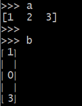

title: Inverse Matrices - Chapter 2 (2.5) 
date: 2022-06-30 
category: la #la stands for Linear Algebra 
keywords: Matrix, Sympy, rref


<div class="container-fluid line-numbers">

  <!-- anchors -->
  <div class='txt-center mt-3'>
    <div class='right-arrow'>
      <a href="#notes" >NOTES</a> 
    </div>
    <div class="right-arrow">
      <a href="#lab">LAB</a> 
    </div>
  </div>

  <!-- blog body -->
  <div class='mt-5'>

    <div>

      <h6 id="notes">NOTES: </h6>

      <!-- \left( \begin{smallmatrix}  \end{smallmatrix}  \right) -->
      <ul class='divGap-0_6em'>
        <li>
          The inverse of Matrix $A_{n*n}$ exists if and only if elimination of $A_{n*n}$ produces $n$ pivots (row exchanges are allowed)
        </li>
        
        <li>
          The matrix $A_{n*n}$ cannot have two different inverses. Suppose $BA=I$ and also $AC=I$. Then $B = C$. For square matrices, an inverse on one side is automatically an inverse on the other side.
        </li>

        <li>
          If $A_{n*n}$ is invertible, the one and only solution to $Ax=b$ is $x = A^{-1}b$.
        </li>

        <li>
          Suppose there is a nonzero vector $x$ such that $Ax = 0$, then $A$ cannot have an inverse. No matrix can bring $0$ back to $x$.
        </li>

        <li>
          If $A_{n*n}$ and $B_{n*n}$ are invertible then so is $AB$. The inverse of a product $AB$ is $(AB)^{-1} = B^{-1}A^{-1}$. Inverses come in reverse order.
        </li>

        <li>
          The Gauss-Jordan method: Given matrix $A_{n*n}$, $\left[ A_{n*n} \quad I_{n*n}  \right]  =  \left[  A_{n*n} \quad e_1 \; e_2 \; \ldots \; e_n    \right]  \Rightarrow \left[ I \quad  A^{-1}  \right]  $
        </li>

        <li>
          If $A$ is invertible and upper triangular, so is $A^{-1}$. 

        </li>


        <li>
          Elimination Matrix: <br><br> $E_{21} =  \left( \begin{smallmatrix} 1 & 0 \phantom{x_1}  & 0 \\ -l_{21} &  1 \phantom{\frac{x}{x}}    & 0 \\ 0   & 0 \phantom{x_1}   & 1 \end{smallmatrix}  \right) =  \left( \begin{smallmatrix}     1 & 0 & 0 \\ -\frac{a_{21}}{ a_{11}} & 1 & 0 \\ 0 & 0 & 1        \end{smallmatrix}  \right)  $ 
          ;

          $E_{31} =  \left( \begin{smallmatrix} 1 & 0 \phantom{x_1}  & 0 \\ 0 &  1 \phantom{\frac{x}{x}}    & 0 \\ -l_{31}   & 0 \phantom{x_1}   & 1 \end{smallmatrix}  \right) =  \left( \begin{smallmatrix}     1 & 0 & 0 \\ 0 & 1 & 0 \\ -\frac{a_{31}}{ a_{11}}   & 0 & 1        \end{smallmatrix}  \right)  $ 
          ;
          $E_{32} =  \left( \begin{smallmatrix} 1 & 0 \phantom{x_1}  & 0 \\ 0 &  1 \phantom{\frac{x}{x}}    & 0 \\  0  &  -l_{32}    \phantom{x_1}   & 1 \end{smallmatrix}  \right) =  \left( \begin{smallmatrix}     1 & 0 & 0 \\ 0 & 1 & 0 \\ 0  &  -\frac{a_{31}}{ a_{11}}     & 1        \end{smallmatrix}  \right)  $   <br> <br>

          $
          \begin{flalign}
          L^{-1} &= E_{32}*E_{31} *E_{21} \\  <!-- first line -->
            &= \begin{bmatrix}
            1 & 0 & 0   \\  
            0 & 1 & 0  \\
            0 & -l_{32} & 1  
            \end{bmatrix} * 
          \begin{bmatrix}
            1 & 0 & 0  \\
            0 & 1 & 0  \\
            -l_{31} & 0 & 1 
            \end{bmatrix}  *
            \begin{bmatrix} 1 & 0 & 0 \\
            -l_{21} & 1 & 0 \\
            0 & 0 & 1
            \end{bmatrix}  \\  <!-- second line -->
          &= 
            \begin{bmatrix}
            1 & 0 & 0   \\  
            0 & 1 & 0  \\ 
            0 & -l_{32} & 1  
            \end{bmatrix} * 
          \begin{bmatrix}
            1 & 0 & 0  \\
            -l_{21} & 1 & 0  \\
            -l_{31} & 0 & 1 
            \end{bmatrix} \\  <!-- third line -->
          &=
            \begin{bmatrix}
            1 & 0 & 0   \\  
            -l_{21} & 1 & 0  \\ 
            \underline{-l_{31} + l_{21} * l_{32}} & -l_{32} & 1  
            \end{bmatrix}  \\
            \end{flalign}
           $ 
        </li>

        <li>
          The Matrix $E_{21}A$ has a zero in row $2$ and column $1$.
        </li>

        <li>
          The Matrix $E_{31}A$ has a zero in row $3$ and column $1$.
        </li>

        <li>
          The Matrix $E_{32}A$ has a zero in row $3$ and column $2$.
        </li>

        <li>
          Row Exchange Matrix: $P_{ij}$ is the identity matrix with row $i$ and $j$ reversed. When this "permutation matrix" $P_{ij}$ multiplies Matrix $A$, it exchanges rows $i$ and $j$ of $A$.
        </li>

        <li>
          Augmented Matrix $[A \; b]$ comes from $Ax = b$.
        </li>

        <li>
          $E [A \; b] = [EA \; Eb]$

        </li>


      </ul>
    </div>

    <div class='my-5 divGap-1_6em'>
      <h6 id='lab'>LAB:</h6>

      <div>
        <div>Preliminary Setup:</div>
        <pre><code class='language-python'>
          from sympy.interactive.printing import init_printing
          init_printing(use_unicode=True)
          from sympy.matrices import Matrix
          from sympy import symbols, sqrt, Rational, acos</code></pre>
      </div>
      

      <div>
        <div>
          1) &#128037 row elimination of augmented Matrix
        </div>

        <!--  \left( \begin{smallmatrix} 1 \, 2 \\ 3 \, 4 \end{smallmatrix} \right) -->
        <pre class='command-line no-line-numbers' data-prompt='>>>' >  
        <code class="language-python">
          A = Matrix([[1, 2, 3], [2, 5, 7], [-3, 2, 1]]); A  # given a Matrix A
        </code></pre>
        <!--  \left( \begin{smallmatrix} 1 \, 2 \\ 3 \, 4 \end{smallmatrix} \right) -->
        $$ \left( \begin{matrix} 1 & 2 & 3 \\ 2 & 5 & 7 \\ -3 & 2 & 1 \end{matrix} \right) $$ 

        <pre class='command-line no-line-numbers' data-prompt='>>>' >  
        <code class="language-python">
          b = Matrix([1, 0, 3]); b   # given a column vector
        </code></pre>

        $$ \left( \begin{matrix} 1 \\ 0 \\ 3  \end{matrix} \right) $$ 

        <pre class='command-line no-line-numbers' data-prompt='>>>' >  
        <code class="language-python">
          E = A.row_join(b); E  # augmented Matrix
        </code></pre>

        $$ \left( \begin{matrix} 1 & 2 & 3 & 1 \\ 2 & 5 & 7 & 0 \\ -3 & 2 & 1 & 3 \end{matrix} \right) $$ 

        <pre class='command-line no-line-numbers' data-prompt='>>>' >  
        <code class="language-python">
          E.rref()  # augmented Matrix elimination - [Row Reduced-Echelon Form]
        </code></pre>

        $$ \left ( \left( \begin{matrix} 1 & 0 & 0 & -6 \\ 0 & 1 & 0 & -13 \\ 0 & 0 & 1 & 11 \end{matrix} \right), \left( \begin{matrix} 0 \quad 1 \quad 2 \end{matrix} \right) \right)  \qquad (*) $$ 

        <div>
          $(*)$  We get a Python 2-tuple above. According to Sympy documentation, rref returns reduced row-echelon form of matrix and indices of pivot vars. So the first element is the reduced row-echelon form, while the second one I guess indicates the pivot column, in this case, column 0, 1, and 2.

        </div>


      </div>

      <div>
        Reference: <a href="https://docs.sympy.org/latest/modules/matrices/matrices.html">Sympy manual: rref, row_join</a>
      </div>


    </div>

  </div>


</div>

<!--
<hr />
<h3 id="labs-lab">Labs {:#lab}</h3>
<p>Preliminary Setup:</p>
<div class="sourceCode" id="cb1"><pre
class="sourceCode python"><code class="sourceCode python"><span id="cb1-1"><a href="#cb1-1" aria-hidden="true" tabindex="-1"></a><span class="op">&gt;&gt;&gt;</span> <span class="im">from</span> sympy.interactive.printing <span class="im">import</span> init_printing  </span>
<span id="cb1-2"><a href="#cb1-2" aria-hidden="true" tabindex="-1"></a><span class="op">&gt;&gt;&gt;</span> init_printing(use_unicode<span class="op">=</span><span class="va">True</span>)</span>
<span id="cb1-3"><a href="#cb1-3" aria-hidden="true" tabindex="-1"></a><span class="op">&gt;&gt;&gt;</span> <span class="im">from</span> sympy.matrices <span class="im">import</span> Matrix</span></code></pre></div>
<ol type="1">
<li>&amp;#128037 vector multiplication</li>
</ol>
<div class="sourceCode" id="cb2"><pre
class="sourceCode python"><code class="sourceCode python"><span id="cb2-1"><a href="#cb2-1" aria-hidden="true" tabindex="-1"></a><span class="op">&gt;&gt;&gt;</span> a <span class="op">=</span> Matrix([[<span class="dv">1</span>, <span class="dv">2</span>, <span class="dv">3</span>]])  <span class="co"># row vector</span></span>
<span id="cb2-2"><a href="#cb2-2" aria-hidden="true" tabindex="-1"></a><span class="op">&gt;&gt;&gt;</span> b <span class="op">=</span> Matrix([<span class="dv">1</span>, <span class="dv">0</span>, <span class="dv">3</span>])   <span class="co"># column vector</span></span></code></pre></div>
<p> </p>
<ol start="2" type="1">
<li>&amp;#128037 unit vector</li>
</ol>
<div class="sourceCode" id="cb3"><pre
class="sourceCode python"><code class="sourceCode python"><span id="cb3-1"><a href="#cb3-1" aria-hidden="true" tabindex="-1"></a><span class="op">&gt;&gt;&gt;</span> <span class="im">from</span> sympy <span class="im">import</span> symbols, sqrt, Rational</span>
<span id="cb3-2"><a href="#cb3-2" aria-hidden="true" tabindex="-1"></a><span class="op">&gt;&gt;&gt;</span> v <span class="op">=</span> symbols(<span class="st">&#39;v&#39;</span>)</span>
<span id="cb3-3"><a href="#cb3-3" aria-hidden="true" tabindex="-1"></a><span class="op">&gt;&gt;&gt;</span> <span class="kw">def</span> unit_v(v):</span>
<span id="cb3-4"><a href="#cb3-4" aria-hidden="true" tabindex="-1"></a><span class="op">&gt;&gt;&gt;</span>     <span class="cf">assert</span> v.shape[<span class="dv">1</span>] <span class="op">==</span> <span class="dv">1</span> <span class="kw">or</span> v.shape[<span class="dv">0</span>] <span class="op">==</span> <span class="dv">1</span>, <span class="ss">f&quot;Please input a vector&quot;</span></span>
<span id="cb3-5"><a href="#cb3-5" aria-hidden="true" tabindex="-1"></a><span class="op">&gt;&gt;&gt;</span>     norm <span class="op">=</span> <span class="dv">0</span></span>
<span id="cb3-6"><a href="#cb3-6" aria-hidden="true" tabindex="-1"></a><span class="op">&gt;&gt;&gt;</span>     <span class="cf">for</span> x <span class="kw">in</span> v:</span>
<span id="cb3-7"><a href="#cb3-7" aria-hidden="true" tabindex="-1"></a><span class="op">&gt;&gt;&gt;</span>         norm <span class="op">=</span> norm <span class="op">+</span> x<span class="op">**</span><span class="dv">2</span><span class="op">;</span></span>
<span id="cb3-8"><a href="#cb3-8" aria-hidden="true" tabindex="-1"></a><span class="op">&gt;&gt;&gt;</span>     norm <span class="op">=</span> sqrt(norm)</span>
<span id="cb3-9"><a href="#cb3-9" aria-hidden="true" tabindex="-1"></a><span class="op">&gt;&gt;&gt;</span>     <span class="cf">return</span> v <span class="op">/</span> norm </span></code></pre></div>
<p> </p>
<ol start="3" type="1">
<li>&amp;#128037 compute angles between two vectors ``` python def
norm_v(v): ““” compute the norm of a given vector v ““” norm = 0 for x
in v: norm += x**2 norm = sqrt(norm) return norm</li>
</ol>
<p>def unit_v(v): ““” calculate the unit vector of a given vector v ““”
assert v.shape[1] == 1 or v.shape[0] == 1, f”Please input a vector” norm
= norm_v(v) return v / norm</p>
<p>def dot(v1, v2): ““” dot product of vectors v1 and v2, both v1 and v2
ought to be column vectors ““” assert v1.shape == v2.shape and
v1.shape[1] == 1, f”the input should be column vectors with the same
dimension” dim = v1.shape[0] result = 0 for i in range(0, dim): result
+= v1[i] * v2[i] return result</p>
<p>def angle_between(v1, v2): ““” compute the angle between two given
vectors according to COSINE FORMUL</p>
-->
